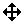

QCursor Class
The QCursor class provides a mouse cursor with an arbitrary shape. More...
| Header: | #include <QCursor> |
| qmake: | QT += gui |
Public Functions
| QCursor() | |
| QCursor(Qt::CursorShape shape) | |
| QCursor(const QBitmap & bitmap, const QBitmap & mask, int hotX = -1, int hotY = -1) | |
| QCursor(const QPixmap & pixmap, int hotX = -1, int hotY = -1) | |
| QCursor(const QCursor & c) | |
| ~QCursor() | |
| const QBitmap * | bitmap() const |
| QPoint | hotSpot() const |
| const QBitmap * | mask() const |
| QPixmap | pixmap() const |
| void | setShape(Qt::CursorShape shape) |
| Qt::CursorShape | shape() const |
| operator QVariant() const | |
| QCursor & | operator=(const QCursor & c) |
| QCursor & | operator=(QCursor && other) |
Static Public Members
| QPoint | pos() |
| QPoint | pos(const QScreen * screen) |
| void | setPos(int x, int y) |
| void | setPos(QScreen * screen, int x, int y) |
| void | setPos(const QPoint & p) |
| void | setPos(QScreen * screen, const QPoint & p) |
Related Non-Members
| QDataStream & | operator<<(QDataStream & stream, const QCursor & cursor) |
| QDataStream & | operator>>(QDataStream & stream, QCursor & cursor) |
Detailed Description
The QCursor class provides a mouse cursor with an arbitrary shape.
This class is mainly used to create mouse cursors that are associated with particular widgets and to get and set the position of the mouse cursor.
Qt has a number of standard cursor shapes, but you can also make custom cursor shapes based on a QBitmap, a mask and a hotspot.
To associate a cursor with a widget, use QWidget::setCursor(). To associate a cursor with all widgets (normally for a short period of time), use QGuiApplication::setOverrideCursor().
To set a cursor shape use QCursor::setShape() or use the QCursor constructor which takes the shape as argument, or you can use one of the predefined cursors defined in the Qt::CursorShape enum.
If you want to create a cursor with your own bitmap, either use the QCursor constructor which takes a bitmap and a mask or the constructor which takes a pixmap as arguments.
To set or get the position of the mouse cursor use the static methods QCursor::pos() and QCursor::setPos().
Note: It is possible to create a QCursor before QGuiApplication, but it is not useful except as a place-holder for a real QCursor created after QGuiApplication. Attempting to use a QCursor that was created before QGuiApplication will result in a crash.
A Note for X11 Users
On X11, Qt supports the Xcursor library, which allows for full color icon themes. The table below shows the cursor name used for each Qt::CursorShape value. If a cursor cannot be found using the name shown below, a standard X11 cursor will be used instead. Note: X11 does not provide appropriate cursors for all possible Qt::CursorShape values. It is possible that some cursors will be taken from the Xcursor theme, while others will use an internal bitmap cursor.
| Shape | Qt::CursorShape Value | Cursor Name | Shape | Qt::CursorShape Value | Cursor Name |
|---|---|---|---|---|---|
| Qt::ArrowCursor | left_ptr |  | Qt::SizeVerCursor | size_ver | |
 | Qt::UpArrowCursor | up_arrow |  | Qt::SizeHorCursor | size_hor |
 | Qt::CrossCursor | cross |  | Qt::SizeBDiagCursor | size_bdiag |
 | Qt::IBeamCursor | ibeam |  | Qt::SizeFDiagCursor | size_fdiag |
 | Qt::WaitCursor | wait |  | Qt::SizeAllCursor | size_all |
 | Qt::BusyCursor | left_ptr_watch |  | Qt::SplitVCursor | split_v |
 | Qt::ForbiddenCursor | forbidden |  | Qt::SplitHCursor | split_h |
 | Qt::PointingHandCursor | pointing_hand |  | Qt::OpenHandCursor | openhand |
 | Qt::WhatsThisCursor | whats_this |  | Qt::ClosedHandCursor | closedhand |
| Qt::DragMoveCursor | dnd-move or move | Qt::DragCopyCursor | dnd-copy or copy | ||
| Qt::DragLinkCursor | dnd-link or link |
See also QWidget and GUI Design Handbook: Cursors.
Member Function Documentation
QCursor::QCursor()
Constructs a cursor with the default arrow shape.
QCursor::QCursor(Qt::CursorShape shape)
Constructs a cursor with the specified shape.
See Qt::CursorShape for a list of shapes.
See also setShape().
QCursor::QCursor(const QBitmap & bitmap, const QBitmap & mask, int hotX = -1, int hotY = -1)
Constructs a custom bitmap cursor.
bitmap and mask make up the bitmap. hotX and hotY define the cursor's hot spot.
If hotX is negative, it is set to the bitmap().width()/2. If hotY is negative, it is set to the bitmap().height()/2.
The cursor bitmap (B) and mask (M) bits are combined like this:
- B=1 and M=1 gives black.
- B=0 and M=1 gives white.
- B=0 and M=0 gives transparent.
- B=1 and M=0 gives an XOR'd result under Windows, undefined results on all other platforms.
Use the global Qt color Qt::color0 to draw 0-pixels and Qt::color1 to draw 1-pixels in the bitmaps.
Valid cursor sizes depend on the display hardware (or the underlying window system). We recommend using 32 x 32 cursors, because this size is supported on all platforms. Some platforms also support 16 x 16, 48 x 48, and 64 x 64 cursors.
Note: On Windows CE, the cursor size is fixed. If the pixmap is bigger than the system size, it will be scaled.
See also QBitmap::QBitmap() and QBitmap::setMask().
QCursor::QCursor(const QPixmap & pixmap, int hotX = -1, int hotY = -1)
Constructs a custom pixmap cursor.
pixmap is the image. It is usual to give it a mask (set using QPixmap::setMask()). hotX and hotY define the cursor's hot spot.
If hotX is negative, it is set to the pixmap().width()/2. If hotY is negative, it is set to the pixmap().height()/2.
Valid cursor sizes depend on the display hardware (or the underlying window system). We recommend using 32 x 32 cursors, because this size is supported on all platforms. Some platforms also support 16 x 16, 48 x 48, and 64 x 64 cursors.
Note: On Windows CE, the cursor size is fixed. If the pixmap is bigger than the system size, it will be scaled.
See also QPixmap::QPixmap() and QPixmap::setMask().
QCursor::QCursor(const QCursor & c)
Constructs a copy of the cursor c.
QCursor::~QCursor()
Destroys the cursor.
const QBitmap * QCursor::bitmap() const
Returns the cursor bitmap, or 0 if it is one of the standard cursors.
QPoint QCursor::hotSpot() const
Returns the cursor hot spot, or (0, 0) if it is one of the standard cursors.
const QBitmap * QCursor::mask() const
Returns the cursor bitmap mask, or 0 if it is one of the standard cursors.
QPixmap QCursor::pixmap() const
Returns the cursor pixmap. This is only valid if the cursor is a pixmap cursor.
QPoint QCursor::pos() [static]
Returns the position of the cursor (hot spot) of the primary screen in global screen coordinates.
You can call QWidget::mapFromGlobal() to translate it to widget coordinates.
Note: The position is queried from the windowing system. If mouse events are generated via other means (e.g., via QWindowSystemInterface in a unit test), those fake mouse moves will not be reflected in the returned value.
Note: On platforms where there is no windowing system or cursors are not available, the returned position is based on the mouse move events generated via QWindowSystemInterface.
See also setPos(), QWidget::mapFromGlobal(), QWidget::mapToGlobal(), and QGuiApplication::primaryScreen().
QPoint QCursor::pos(const QScreen * screen) [static]
Returns the position of the cursor (hot spot) of the screen in global screen coordinates.
You can call QWidget::mapFromGlobal() to translate it to widget coordinates.
See also setPos(), QWidget::mapFromGlobal(), and QWidget::mapToGlobal().
void QCursor::setPos(int x, int y) [static]
Moves the cursor (hot spot) of the primary screen to the global screen position (x, y).
You can call QWidget::mapToGlobal() to translate widget coordinates to global screen coordinates.
See also pos(), QWidget::mapFromGlobal(), QWidget::mapToGlobal(), and QGuiApplication::primaryScreen().
void QCursor::setPos(QScreen * screen, int x, int y) [static]
Moves the cursor (hot spot) of the screen to the global screen position (x, y).
You can call QWidget::mapToGlobal() to translate widget coordinates to global screen coordinates.
Note: Calling this function results in changing the cursor position through the windowing system. The windowing system will typically respond by sending mouse events to the application's window. This means that the usage of this function should be avoided in unit tests and everywhere where fake mouse events are being injected via QWindowSystemInterface because the windowing system's mouse state (with regards to buttons for example) may not match the state in the application-generated events.
Note: On platforms where there is no windowing system or cursors are not available, this function may do nothing.
See also pos(), QWidget::mapFromGlobal(), and QWidget::mapToGlobal().
void QCursor::setPos(const QPoint & p) [static]
This is an overloaded function.
Moves the cursor (hot spot) to the global screen position at point p.
void QCursor::setPos(QScreen * screen, const QPoint & p) [static]
This is an overloaded function.
Moves the cursor (hot spot) to the global screen position of the screen at point p.
void QCursor::setShape(Qt::CursorShape shape)
Sets the cursor to the shape identified by shape.
See Qt::CursorShape for the list of cursor shapes.
See also shape().
Qt::CursorShape QCursor::shape() const
Returns the cursor shape identifier. The return value is one of the Qt::CursorShape enum values (cast to an int).
See also setShape().
QCursor::operator QVariant() const
Returns the cursor as a QVariant.
QCursor & QCursor::operator=(const QCursor & c)
Assigns c to this cursor and returns a reference to this cursor.
QCursor & QCursor::operator=(QCursor && other)
Move-assigns other to this QCursor instance.
This function was introduced in Qt 5.2.
Related Non-Members
QDataStream & operator<<(QDataStream & stream, const QCursor & cursor)
Writes the cursor to the stream.
See also Serializing Qt Data Types.
QDataStream & operator>>(QDataStream & stream, QCursor & cursor)
Reads the cursor from the stream.
See also Serializing Qt Data Types.